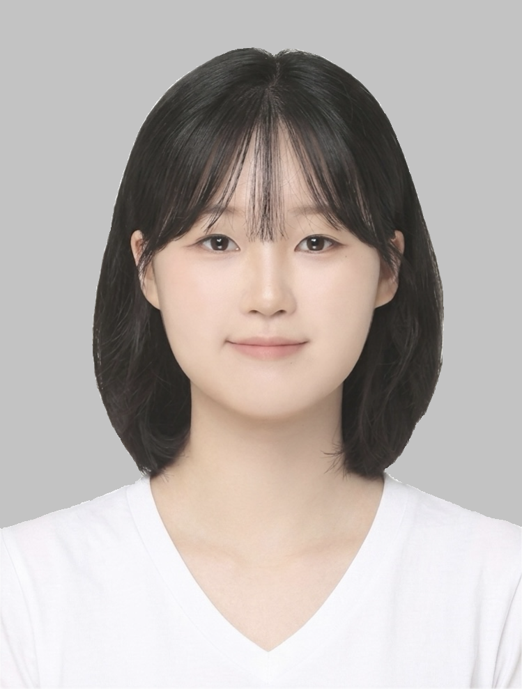
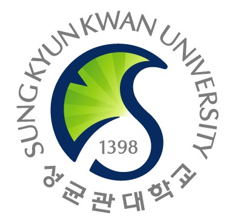
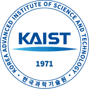
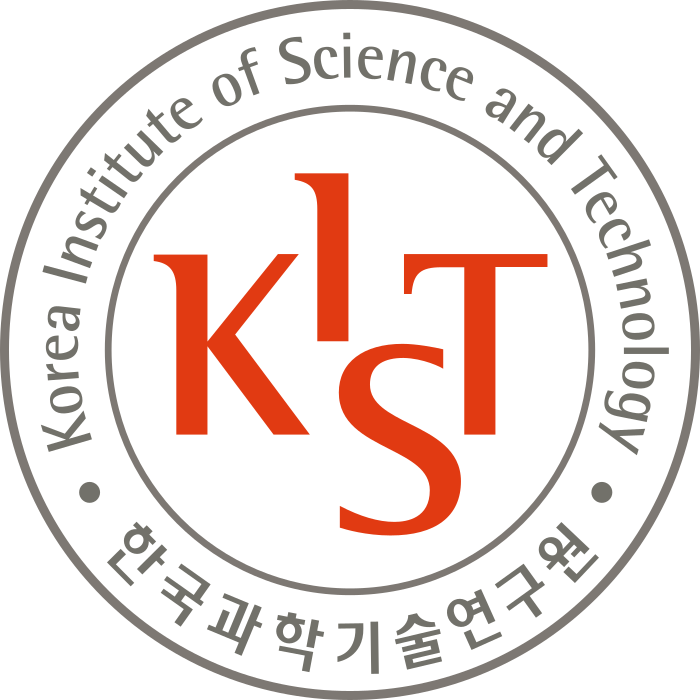

Yuna Park
LLM Safety · Human–AI Interaction · LLM Interpretability
I study the safety of large language models from both model and user perspectives. My research explores how LLM behavior changes across operational contexts and how interactions with AI can influence users' beliefs, states, and behavior.
Publications
The Fragility of Jailbreak Robustness Across Operational States
Under review at EMNLP 2026
The Impact of Prompt-Based Personality Induction on Safety of LLMs
Korea Computer Congress (KCC), 2025
Perspective Shifts: Cultivating Teacher Diversity in Online Knowledge Distillation
Knowledge-Based Systems, 2025
REPrune: Channel Pruning via Kernel Representative Selection
AAAI Conference on Artificial Intelligence (AAAI), 2024
Education
M.S. in Electrical and Electronic Engineering
Yonsei–KIST Cooperative Graduate Program
Advisor: Prof. Won Woo Ro

B.S. in Statistics
Experience

Research Intern, Interaction Computing Lab
Research on AI-induced delusion through simulated patients, examining how patients' internal states change through repeated interactions with conversational AI.

Student Researcher, Center for Intelligence and Interaction
Mixed Reality Lab · Supervisor: Dr. Jea In Hwang
Data Science Team · Supervisor: Dr. Suhyun Kim
Awards
Korea Computer Congress (KCC)